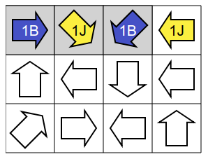
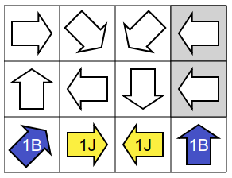
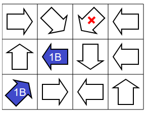
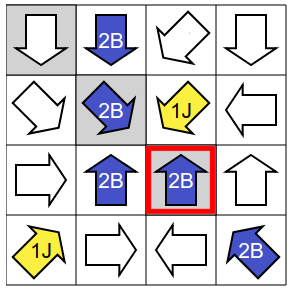
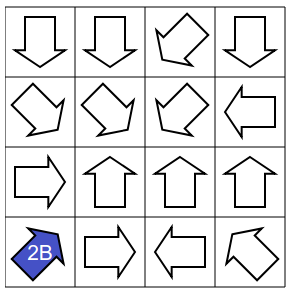
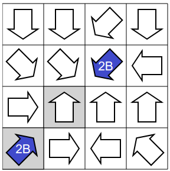
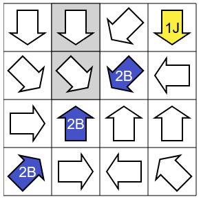
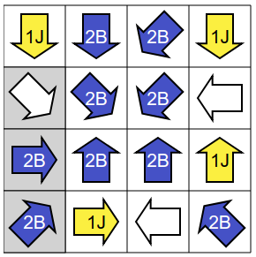
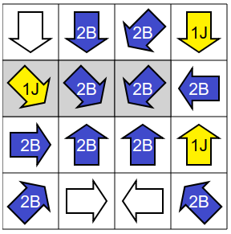
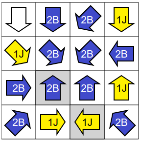

Before starting, we can notice that the problem is "symmetrical" between the yellow and blue colors, in the sense that if we have a solution to the problem, then by changing all the blue arrows by yellow arrows and all the arrows yellow with blue arrows, we obtain another solution. From this remark, we can deduce that we are free to choose as we want the color of the first arrow we put: it can not be a bad choice that would prevent us from reaching a solution.
In the following, we will always start by placing a blue arrow.
We will try different starts, in order to find one that "forces" us to pose arrows of certain colors. Thus, we can progress in coloring arrows without ever being wrong.
First attempt. Let's first assume that we first fill the first row. There are two different ways to fill it while respecting the coloring rules :
|  |
A first way. |
 |
A second way. |
Since there are two possibilities, we can not be sure which one to take. Let's try otherwise.
Second try. Now suppose we start filling the last row. Again, there are two different ways to fill it while respecting the coloring rules :
|  |
A first way. |
 |
A second way. |
Since there are two possibilities, we can not be sure which one to take. Let's try a third approach.
Third attempt. Suppose now that we start by filling the diagonal rising, which is interesting because it also has two arrows pointing to each other.
 |
Let's start, as previously explained, by putting a blue arrow. |
|  |
If we put a second blue arrow, we are stuck, because the third box of the diagonal can not be yellow or blue, because the arrow it contains points to two blue arrows. |
 |
We deduce that the second arrow must be yellow (since it can not be blue), then the third must be blue (since the blue arrow of the corner must point to another blue arrow). |
 |
The yellow arrow in the middle imposes two more yellow arrows. |
 |
In the right column, the middle arrow can not be yellow because it points to at least two yellow arrows. It is therefore colored in blue. |
 |
The last added blue arrow imposes two new blue arrows. |
 |
On the bottom row, the second arrow can not be blue, otherwise the third arrow would point to two blue arrows. So the second arrow is to be colored in yellow. |
 |
The addition of this yellow arrow imposes two new yellow arrows. |
 |
The last arrow must be blue, so that the arrow in the top right corner points to a single yellow arrow.
It's finished ! |
It is wise to start by trying to fill a line with the maximum of "constraints", such as arrows pointing to each other. For example, let's study the rising diagonal. The box at the bottom left can be yellow or blue.
First attempt. Let's try to color the bottom left box in yellow :
 |
If the next box in the direction of the yellow arrow was also yellow, we would be stuck for the next arrow because we would need an arrow 2J, but we do not have any. So the next box is blue.
The next arrow on the diagonal points to a yellow arrow and a blue arrow, so color it 1J (because 2B is invalid, and we have no 1B arrow). |
 |
The arrow 2B we impose two blue arrows. |
 |
The arrow 2B from the middle imposes on us two more blue arrows. |
 |
At this point, we are stuck because the arrow 2B framed in red can not point to two blue arrows. |
Second attempt. Since the arrow at the bottom left can not be yellow, it must be blue.
|  |
So let's start with a blue corner. |
 |
If the third arrow of the rising diagonal was yellow, then we would be stuck, because we should put a yellow arrow on the box between the two colored arrows, and we could not then place two blue arrows on the diagonal as indicated the arrow 2B of the starting corner. |
|  |
We deduce that the third arrow must be blue. |
|  |
This second blue arrow must point to two blue arrows, so the middle arrow is colored in blue.
Then, to avoid that the arrow of the bottom left corner points to three blue arrows, you must color in yellow the arrow of the corner at the top right. |
 |
The second arrow 2B imposes two new blue arrows. |
 |
One of these new arrows still requires two new blue arrows. |
 |
We deduce two more blue arrows. |
|  |
In the third row, to avoid having three blue arrows, the arrow on the far right should be yellow.
This arrow 1J already pointed to another yellow arrow, you must put a blue arrow in the hole of the right column. |
 |
The arrow 2B added already points to two blue arrows, so you have to complete the second row with a yellow arrow. |
 |
The addition of this yellow arrow imposes two new yellow arrows. |
 |
The last arrow must be yellow, so that the arrow in the bottom right corner points to only two blue arrows.
It's finished ! |
It's informatics!